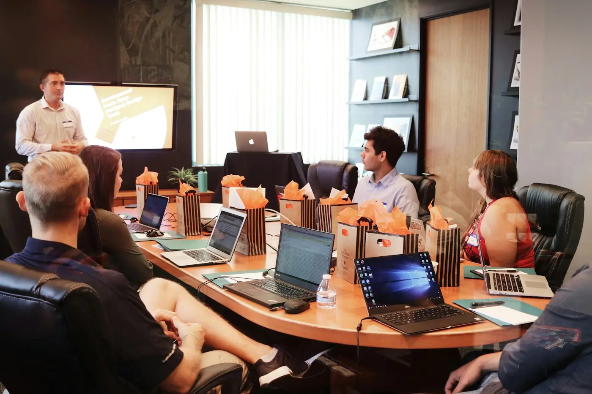

Usually when a people decision has become consequential enough to require outside perspective, additional capacity or a more structured way to think it through.
Services
The work behind better organizations.
Ten areas of practice, one connected way of thinking about people, leadership and the decisions that shape how organizations actually work.
01 — 10 / Practice Areas
Advisory · Design · Capability
01 / People Strategy
People strategy is a set of decisions, not a document.
We help leaders connect workforce, capability and organizational choices to the priorities the business is actually trying to deliver. The output is not a slide deck — it is a clearer point of view on what to do next and why.
- People strategy articulation
- Workforce and capability priorities
- Strategic workforce scenarios
- Alignment between business and people agendas

02 / Talent & Workforce Advisory
Talent decisions become stronger when they are connected to the work.
We look at talent as an architecture — the roles, capabilities and pathways that matter most to what the organization is trying to become.
01
02
03
04
05
Workforce planning
Build a considered view of the capability and shape of the workforce over time.
Talent architecture
Clarify the roles, segments and pathways that deserve disproportionate attention.
Succession thinking
Understand where leadership and critical-role cover needs to be more deliberate.
Capability mapping
Translate strategy into the capabilities the organization must build or buy.
Critical-role planning
Identify the roles where the wrong decision costs the most — and plan around them.
03 / Leadership Development
Leadership shows up in the way an organization behaves.
Development works when it is connected to the situations leaders actually face — decisions, teams, change, difficult conversations and unclear priorities. We build capability around real context, not generic frameworks.
04 / Organization Design
Make the organization easier to understand — and easier to lead.
Design is not a re-drawing of boxes. It is the deliberate choice of how roles, decisions, teams and interfaces fit together so work moves without unnecessary friction.
- Operating model and structure choices
- Role clarity and accountabilities
- Decision rights and forums
- Team interfaces and collaboration
The diagram alongside is a methodology illustration, not a client organization chart.
05 / Employee Experience
Design the moments people actually experience.
Experience is the accumulated effect of everyday systems, conversations and opportunities — not a one-time campaign.
01
Join
Enter with clarity, context and belonging.
02Learn
Build the knowledge and capability to contribute.
03Contribute
Understand how work connects to the wider organization.
04Grow
See meaningful pathways for development and responsibility.
05Lead
Take responsibility for people, decisions and outcomes.
06Transition
Move, change role or leave with dignity and clarity.
06 / Culture & Change
Culture is what people experience, not what a poster says.
We help organizations make culture and change concrete — the behaviors, rituals, decisions and everyday practices that shape how people work together.
BehaviorTranslate intent into the behaviors leaders and teams can actually recognize.
ChangeSequence change so it survives contact with a busy, real organization.
AdoptionHelp leaders carry the change beyond the launch moment.
07 / HR Transformation
Move HR from activity to connected business value.
Transformation is not only a technology project. It is a rethink of how HR services, data, capability and leadership fit together.
01 / ASSESS
Understand the current system
Priorities, pain points, service experiences and capability constraints.
02 / PRIORITIZEChoose what matters most
The few changes that can make the wider system work better.
03 / DESIGNBuild the operating model
Align people, process, technology and capability instead of solving each in isolation.
04 / ENABLESupport new ways of working
Help leaders and teams make the model part of everyday practice.
05 / SUSTAINKeep the model alive
Governance, capability and rhythm that keep the change in place.
08 / Performance & Capability
Performance improves when expectations are clear and capability is real.
We help organizations connect performance conversations, capability development and role expectations into something people can act on — without reducing the work to a rating.
- Performance frameworks and rhythms
- Capability development priorities
- Role expectation and contribution clarity
- Feedback and development practice
Capability focus
Build
Buy
Borrow
Leadership
Data & insight
Digital fluency
Change craft
Illustrative methodology — not a client assessment.
09 / Advisory for Critical People Decisions
A second perspective, when the decision matters.
Sometimes the work is not a program. It is one decision — a restructure, a leadership appointment, a capability question — that deserves careful, independent thinking.
Often a small number of focused conversations, a structured point of view and a clear recommendation — shaped around the actual decision on the table.
Discretion is part of the practice. Engagement scope, participants and confidentiality expectations are agreed before work begins.
Yes — most of the work is done alongside internal teams, with the aim of strengthening internal decision-making rather than replacing it.
10 / Build the Right Engagement
Shape the work around the need — not the other way around.
Engagements are shaped around the actual question, the available context and the pace at which decisions need to be made.
Model 01
Diagnostic
A focused, time-bound piece of work to understand what is really happening before deciding what to do.
Model 02Focused advisory
Independent perspective on a specific decision — structure, leadership, capability or a critical people question.
Model 03Embedded partnership
Working alongside leadership and internal HR teams through a period of change or design.
Model 04Capability program
Building internal capability — leadership, HR or manager — around the way the organization actually works.
Engagement scope, participants and confidentiality expectations are agreed before work begins.
Start a Conversation